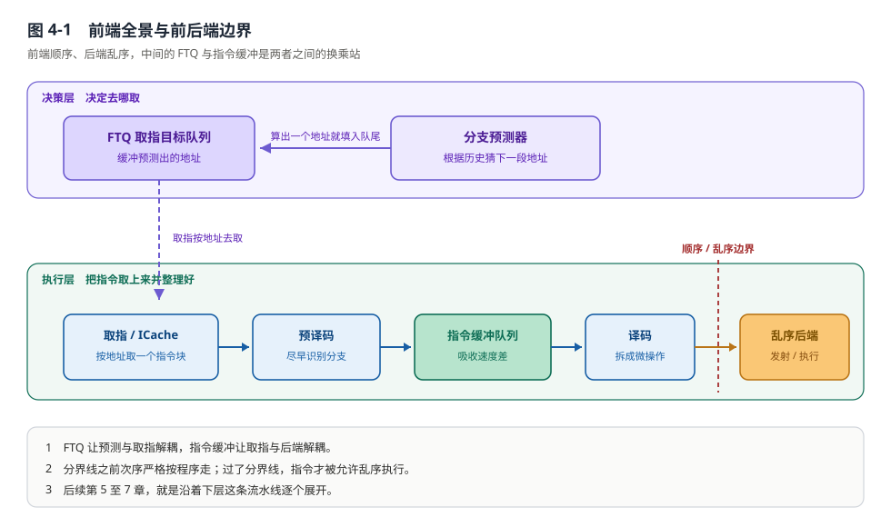
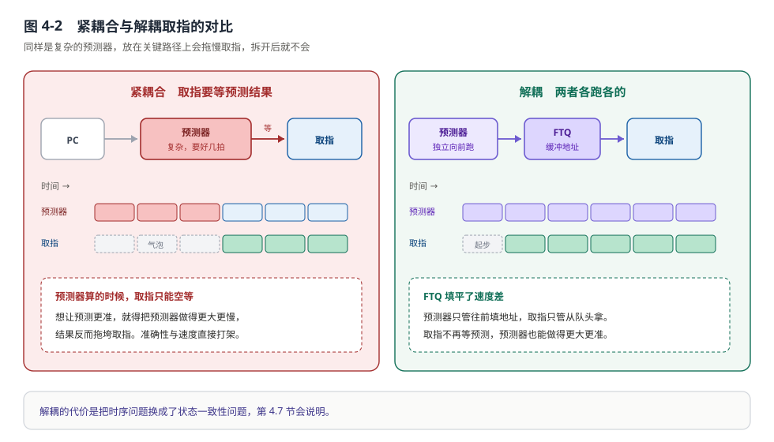
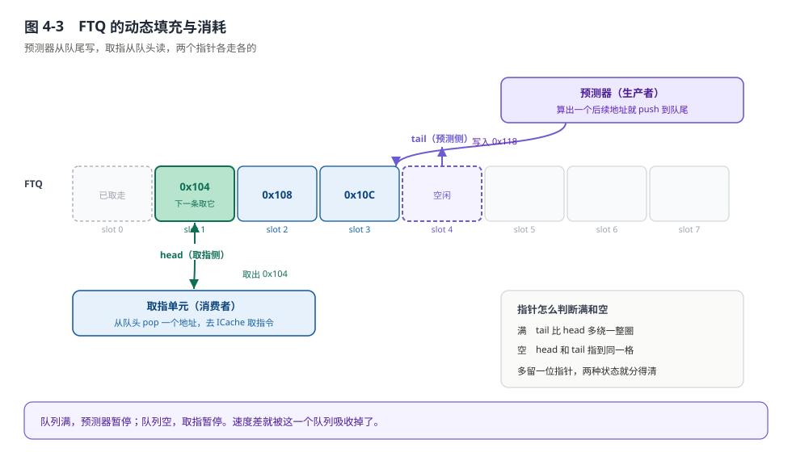
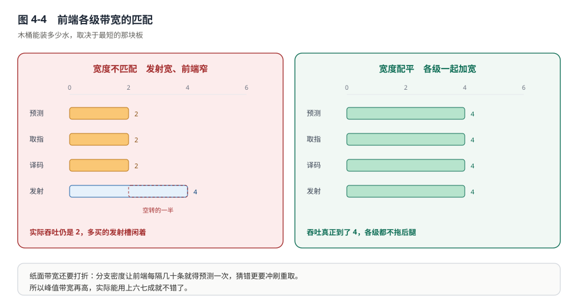

第 4 章 前端全景与解耦取指
本章导读 前三章我们一直在折腾后端，讲怎么让指令乱序执行。但再强的后端，没人喂指令也只能空转。从本章起，我们把目光转向前端，回答一个朴素的问题：乱序后端每周期能吃两条甚至更多指令，前端怎么才能持续、准确地把它们供上来？
学完本章，你应该能够： 1. 说清前端和后端各管什么，分界线画在哪里； 2. 理解”解耦取指”的思想，以及它为什么要靠一个队列； 3. 看懂取指目标队列（FTQ）怎样把预测和取指拆成两条独立的流水线； 4. 明白取指带宽要和后端吞吐匹配，光取够不行，还得取对地方。
前端的活儿不只是”取指”两个字。它得一边猜、一边取，还要在猜错时尽快刹车。本章先搭起全景，后面三章再逐个拆开细讲。
4.1 后端再快，也得有指令喂
先算一笔账。我们的教学模型是 2 发射乱序核，后端每周期最多能开始执行 2 条指令。如果前端每周期只能送来 1 条，后端就有一半的发射槽闲着——相当于花两份钱买了两个灶眼，却只开一个。
真正的高性能核更夸张。发射宽度做到 6 甚至 8，意味着前端每周期要稳定供上 6 到 8 条指令。这个数字看着不小，但把需求拆开看，无非三件事：
- 足量。每周期供给的指令条数要跟得上发射宽度。
- 准确。取来的必须是将要执行的指令。分支猜错了，后面取的一堆全作废。
- 及时。后端要的时候就得有，不能让执行单元干等。
这三件事里，最费劲的是”准确”。因为程序里平均每隔几条就有一个分支，而分支要等执行完才知道往哪走。前端只能猜。猜就容易错，错了就得把已经取进来、甚至已经开始执行的指令全部冲掉，从正确的地方重新取。这一冲一取，吃掉的正是我们好不容易省下来的性能。
所以前端的设计，本质上是在和”分支的不确定性”搏斗。解耦取指就是这场搏斗里的关键一招。
4.2 前端和后端的分界线
先把整条流水线切成两半。
前端按顺序工作：程序计数器（PC）一条道走到黑，取指、预译码、译码，指令像排队进场的观众，先来后到，次序不乱。
后端从第 3 章的发射开始就乱了序：指令进入保留站，谁的操作数先就绪谁先执行，完成次序和程序次序可以完全不同。
于是一个自然的问题出现了：这两半怎么接起来？总不能让顺序的前端直接连到乱序的后端中间吧。
答案是在中间放缓冲队列。前端把译码后的指令按顺序塞进队列，后端按自己的节奏从队列里取。前端不必等后端消化完当前这批，后端也不会因为前端慢一拍而停顿。这些队列就是顺序世界和乱序世界之间的”换乘站”。
在前端这一侧，有一个关键的队列叫取指目标队列（Fetch Target Queue, FTQ）。它不存指令本身，而是存”下一段指令从哪里开始取”的地址。先把全景画出来，看看 FTQ 站在什么位置。

图 4-1 前端各模块按顺序排列，FTQ 与指令缓冲是顺序前端通向乱序后端的换乘站。
从图里可以看到，前端内部其实还分成了两层。上面一层是分支预测器和 FTQ，它们决定”去哪取”；下面一层是取指、预译码、译码和指令缓冲，它们负责”把指令取上来并整理好”。这两层之间，正是靠 FTQ 解耦的。下一节讲为什么非要拆开。
4.3 为什么要解耦
最早的做法很直接：取指单元每取一段指令，就顺手问一声预测器”前面有没有分支，如果跳，下一段去哪取”。预测器算出来，取指单元立刻照着去取。这叫紧耦合。
紧耦合有个要命的问题。分支预测器，尤其是后面要讲的 TAGE、统计校正这类高精度预测器，电路很复杂，算一次要好几拍。而取指是紧接着要用到这个结果的下游。预测器慢，取指就得站在原地等它——这一等，流水线里就出现了气泡。你想把预测器做得更准（通常也更慢），结果反而拖垮了取指速度。
解耦取指换了个思路：既然预测器慢，就别让它挡在取指的关键路径上。把”决定去哪取”和”真正去取”拆成两件独立的事：
- 预测器变成一条独立向前跑的流水线，它不停地往前算未来一段段的取指地址，算出一个就往 FTQ 里填一个。
- 取指单元也独立跑，它只从 FTQ 的队头拿地址，拿到就去 ICache 取指令。
- 中间的 FTQ 吸收两者的速度差。预测器算得快，队列就攒满一些；算得慢，取指就等一下。
用一个日常的例子来说：预测器像坐在副驾的导航员，一直往前报”下一个路口左转、再下一个右转”；取指像开车的人，只管按报出来的路口走。导航员算得快就把接下来几个路口都报出来存着，算得慢司机就慢点开。两个人各干各的，谁也不堵谁。

图 4-2 紧耦合时取指要等预测结果，解耦后预测和取指各跑各的，由 FTQ 填平速度差。
解耦带来的好处不只是少几个气泡。更重要的是，它把预测器从取指的时序关键路径上摘了下来。设计者于是可以自由地把预测器做得更大、更准，而不必担心”预测器一复杂，前端就慢”。这正是现代高性能前端敢用 TAGE 这类复杂预测器的前提。
4.4 取指目标队列怎样工作
FTQ 是一个典型的先进先出队列（FIFO），可以用生产者—消费者模型来看它。
- 生产者是预测器。它每算出一个后续取指地址，就从队尾写入（push）一个表项。表项里主要是目标地址，实战中还会带上这次预测的辅助信息（比如分支历史快照、返回栈状态），我们这里先只看地址。
- 消费者是取指单元。它从队头读出（pop）一个地址，据此去取一段指令。
- 队列满说明取指跟不上预测的节奏。这时预测器暂时停下来，反正地址存再多也没地方放。
- 队列空说明暂时没有地址可取。通常发生在前端刚刚被冲刷、或者预测器还没来得及算出下一段的时候，取指只能停一拍。
把一次动态过程走一遍，FTQ 的行为就清楚了。

图 4-3 预测器从队尾填入地址，取指从队头取走地址，两个指针各自前进，速度差由队列深度吸收。
要留意一个容易混淆的点：FTQ 里存的是地址，不是指令。真正的指令要等取指单元拿着地址去 ICache 取上来，再经过预译码、译码，才进入指令缓冲队列等待后端。所以前端其实串着两个队列：FTQ 缓冲”去哪取”，指令缓冲队列缓冲”取上来的指令”。前者管预测和取指的解耦，后者管取指和译码后端之间的速度差。第 6 章会细讲后者。
FTQ 队列指针的判空、判满逻辑，本质就是”头指针追上尾指针”的比较。本章配套的 Digital 电路用一个小电路把这个判断画了出来，Verilog 骨架则给出一个真正能跑的 FIFO。
4.5 取指带宽要和后端吞吐匹配
前端供给的速度，通常用取指带宽衡量，也就是每周期能取回多少条指令。它必须和后端吞吐匹配，否则又是一处木桶短板。
匹配关系可以这样想：
- 后端是 2 发射，前端每周期至少得供 2 条，否则发射槽填不满。
- 前端内部也有带宽匹配问题。预测宽度、取指宽度、预译码宽度、译码宽度，最好都大致等于发射宽度。任何一环窄了，都会成为瓶颈。
现代处理器一次不是取一条指令，而是取一个取指块，比如 16 到 32 字节，里面装着好几条定长或变长指令。这样一次 ICache 访问就能喂饱后端几拍。但块越大，跨界的问题越多：一个块里往往横跨了分支，块尾的指令可能根本不该执行。
再看分支密度。整数程序里平均每五到十条指令就有一个分支，也就是说每取几十条指令就得预测一次。一旦猜错，不光已取的要作废，还要等重新定位、重新取，这段时间前端的有效带宽大幅下降。所以纸上算出来的峰值带宽，实际能用到六七成就不错了。

图 4-4 预测、取指、译码、发射各级宽度应大致相等，最窄的一环决定整体吞吐。
这里可以体会到一个贯穿全书的思想：处理器设计很大程度上是配平的艺术。把某一级做快并不难，难的是让所有级协同地快。只把发射宽度从 2 提到 4，前端供不上，性能几乎不变，面积和功耗却上去了。
4.6 前端各模块一览
有了全景图，再把各模块按指令流过的顺序点一遍，顺便交代它们分别在哪一章展开。
- 分支预测器。根据历史预测分支往哪跳，把后续取指地址填进 FTQ。第 5 章讲原理，重点是 2 位计数器、BTB、RAS 和 TAGE 的思想。
- 取指目标队列 FTQ。缓冲预测出的地址，解耦预测和取指。就是本章的主角。
- 指令缓存 ICache。按地址把指令取上来。本书只讲它的接口和作用，不展开缓存的内部实现。第 6 章。
- 预译码。在指令还没正式译码前，先粗粗看一眼，尽早发现分支，好让预测错误能提前暴露、提前冲刷。第 6 章。
- 指令缓冲队列。吸收取指和后端之间的速度差，让后端要指令时随时有。第 6 章。
- 译码与微操作拆分。把一条复杂指令翻译成后端能处理的简单操作，必要时做指令融合或拆分。第 7 章。
走完这六站，指令就跨过顺序与乱序的边界，交给后端了。后面三章就是沿着这张清单往下讲。
4.7 重点与权衡
本章的概念不多，但有几个值得记牢的点。
第一，前端顺序、后端乱序，中间靠队列换乘。 这是理解整个处理器结构的骨架。FTQ 和指令缓冲队列都是”换乘站”，它们让两边不必互相等待。
第二，解耦是一种通用思想。 把”决策”和”执行”拆成两条独立流水线，中间用队列吸收速度差——这个套路在前端是预测与取指解耦，在后端还有取指与执行解耦、地址生成与数据访问解耦。看懂一次，以后到处都用得上。
第三，宽度要配平。 木桶效应在前端尤其明显，孤零零地把某一级做宽没有意义。
关于权衡，最典型的是 FTQ 的深度。队列深，能吸收更大的速度差，前端被短暂停顿时也不至于马上断粮；但队列越深，面积越大，而且一旦预测错误被冲刷，队列里攒的这些地址全白算了，浪费也更多。和处理器里的大多数参数一样，深度是一个折中值，没有唯一正确答案。
还有一个隐藏的取舍值得点一下：解耦让预测器可以做得更复杂、更准，但预测结果要隔一段才被取指用上，这中间如果分支历史或返回栈发生了变化，得保证信息能对得上。真实设计要为此在 FTQ 表项里附带额外的状态。本书不展开这些细节，但你要知道，“解耦”不是免费的，它把时序问题换成了状态一致性问题。
4.8 配套的图形与代码
本章配了两套材料，分工和前几章一致。
图形。图 4-1 是前端全景连接图，把模块边界和数据流画在一起；图 4-3 是 FTQ 的动态填充与消耗过程，适合对照 4.4 节看。另外有一个可以在 Digital 里打开仿真的小电路 code/digital/04_ftq_status.dig，它把判空判满最底层的一步——指针的逐位比较——单独画出来：拨动 head_bit 和 tail_bit，相等时 equal 亮起。多位比较单元的结果按 4.4 节讲的判据组合起来，就是完整的 empty 和 full。Digital 擅长表达这种落到连线上的局部机制，全景和数据流则用 SVG 分层图更清楚。
代码。写代码前先看接口，再看实现。接口也不是一次给全的，需要哪个信号就加哪个，你会看到每个信号都是被具体需求逼出来的。完整文件和测试在 code/verilog/04_frontend/。
4.8.1 先看接口
把 FTQ 当成一个黑盒子，看看谁要跟它打交道。
第一步，预测器要把地址放进来。 队列存在的意义就是暂存取指地址，所以得有写入口。写需要两样东西，一个”这一拍要写”的使能，一个”写什么”的地址：
input wire push,
input wire [ADDR_W-1:0] push_addr,第二步，取指要把地址取走。 光进不出没意义，读出端同样要一个使能和一个地址输出：
input wire pop,
output reg [ADDR_W-1:0] pop_addr,pop_addr 写成 reg，是因为它在时钟沿里被赋值。
第三步，写满了得有人喊停。 预测器只管往前写，队列满了还写就会丢地址。所以队列要能告诉它”满了”：
output wire full,第四步，取空了也得有人喊停。 同理，取指来拿时若队列是空的，拿到的就是无效地址，所以还要一个”空了”：
output wire empty,第五步，时钟和复位。 指针要跟着时钟推进，复位时得回到起点，这两个信号少不了：
input wire clk,
input wire rst_n,接口定稿。 把五步攒起来，加上两个参数，就是 FTQ 对外完整的样子：
module ftq #(
parameter DEPTH = 8,
parameter ADDR_W = 32
)(
input wire clk,
input wire rst_n,
// 预测器写端口（生产者）
input wire push,
input wire [ADDR_W-1:0] push_addr,
output wire full,
// 取指读端口（消费者）
input wire pop,
output reg [ADDR_W-1:0] pop_addr,
output wire empty
);接口定了，内部怎么实现就顺着这些信号走。
4.8.2 再看实现
第一步，先有地方存。 队列说到底是一排格子，加两个下标：写的人往 tail 指的格子放，读的人从 head 指的格子拿。
reg [ADDR_W-1:0] ftq_mem [0:DEPTH_M1];
reg [PTR_W-1:0] head;
reg [PTR_W-1:0] tail;DEPTH_M1 就是 DEPTH-1，先转成 localparam 是因为这个版本的 iverilog 不接受数组上界直接写参数表达式。
第二步，怎么知道空了。 读写两边都得知道队列状态。最简单的判断是 head == tail：一开始两个指针都在起点，队列空；写入让 tail 前进，读出让 head 前进；等 head 追上 tail，就没有可读的了。这正是接口里的 empty 要输出的东西：
assign empty = (head == tail);第三步，怎么知道满了。 麻烦来了。深度 8 只要 3 位指针，可写满 8 个之后 tail 绕回 0，这时 head == tail，和空完全一样，分不清。办法是多留一位，用 4 位指针。写满时 tail 走到第 8 格（4'b1000），最高位从 0 翻成 1，而 head 还在 0。于是：
assign full = (head[PTR_W-1] != tail[PTR_W-1]) &&
(head[PTR_W-2:0] == tail[PTR_W-2:0]);最高位不同、其余位相同，就是满。多出来的这一位不参与寻址，只用来区分状态。
第四步，让指针动起来。 预测器写、取指读，两边各推各的指针，接口上的 push 和 pop 在这里派上用场：
if (push && !full) begin
ftq_mem[tail[PTR_W-2:0]] <= push_addr;
tail <= tail + 1'b1;
end
if (pop && !empty) begin
pop_addr <= ftq_mem[head[PTR_W-2:0]];
head <= head + 1'b1;
end两个 if 并列而不是二选一，因为预测器写队尾、取指读队头完全可以发生在同一拍，各走各的指针互不干扰。
第五步，一个隐蔽的坑。 注意索引数组用的是 tail[PTR_W-2:0]，也就是低 3 位，不是完整的 tail。写满时 tail 的值是 8，而数组只有 [0:7]——直接用完整指针就越界了，仿真会读出一片 x。这个错误不报编译错，很难发现。记住：指针的最高位只服务于判满，别拿它当数组下标。
第六步，补上复位，拼成完整模块。 把前面几步合起来，加上复位，就是 ftq.v 的全部：
module ftq #(
parameter DEPTH = 8,
parameter ADDR_W = 32
)(
input wire clk,
input wire rst_n,
input wire push,
input wire [ADDR_W-1:0] push_addr,
output wire full,
input wire pop,
output reg [ADDR_W-1:0] pop_addr,
output wire empty
);
localparam PTR_W = 4;
localparam DEPTH_M1 = DEPTH - 1;
reg [ADDR_W-1:0] ftq_mem [0:DEPTH_M1];
reg [PTR_W-1:0] head;
reg [PTR_W-1:0] tail;
// 判空：两个指针完全相同
// 判满：最高位不同、其余位相同（tail 比 head 多绕了一整圈）
assign empty = (head == tail);
assign full = (head[PTR_W-1] != tail[PTR_W-1]) &&
(head[PTR_W-2:0] == tail[PTR_W-2:0]);
integer i;
always @(posedge clk or negedge rst_n) begin
if (!rst_n) begin
head <= {PTR_W{1'b0}};
tail <= {PTR_W{1'b0}};
pop_addr <= {ADDR_W{1'b0}};
for (i = 0; i < DEPTH; i = i + 1)
ftq_mem[i] <= {ADDR_W{1'b0}};
end else begin
if (push && !full) begin
ftq_mem[tail[PTR_W-2:0]] <= push_addr;
tail <= tail + 1'b1;
end
if (pop && !empty) begin
pop_addr <= ftq_mem[head[PTR_W-2:0]];
head <= head + 1'b1;
end
end
end
endmodule动手时还会遇到两个小麻烦：存储器不能取名 table，testbench 里的信号也不能叫 expect，它们在 Icarus Verilog 里都是保留字（配套文件用的是 ftq_mem 和 exp_addr）。
配套的 testbench 依次做了复位、连续写入至满、读出至空、以及读写同拍几种情形，全部通过。运行方法见目录里的 README。
4.9 香山一瞥（选读）
香山采用了典型的解耦前端：分支预测作为一个独立的前级先行，把预测结果送进取指目标队列，取指级再从队列里取地址。这样设计的一个直接好处，是取指不会被复杂预测器的计算时间拖住，前端气泡明显减少。
前面几章说过，本书不展开香山的工程细节。这里只想让你看到那个熟悉的影子：它用的正是本章讲的”解耦 + 队列缓冲”思想，只不过规模更大、预测器更复杂、状态管理更精细。思想对上了，具体的表项和参数留给你以后去读源码。
4.10 小结与思考题
小结
- 前端要同时做到足量、准确、及时地给后端供指令，难点在于分支的不确定性。
- 前端顺序、后端乱序，两者的边界靠 FTQ 和指令缓冲这类队列来衔接。
- 解耦取指把”决定去哪取”（预测）和”真正去取”（取指）拆成两条独立流水线，由 FTQ 吸收速度差，既减少气泡，又让预测器可以做得很复杂。
- FTQ 是存地址的 FIFO，生产者是预测器，消费者是取指单元，满则暂停预测，空则暂停取指。
- 取指带宽要和后端发射宽度及各前端模块宽度配平，木桶短板决定整体吞吐。
思考题
- 如果把 FTQ 去掉，让取指级直接等预测器的结果，前端会付出什么代价？试着从气泡和预测器复杂度两方面回答。
- FTQ 满了说明什么？这时候该限制预测器还是限制取指？反过来队列空了呢？
- 为什么说解耦”把时序问题换成了状态一致性问题”？提示一下，想想 4.7 节提到的分支历史和返回栈。
- 一个 4 发射的核，前端各级宽度都做成 4 就一定够快吗？还有哪些因素会让实际带宽打折？
- 本章的 FTQ 用”多一位指针”区分满和空。如果换成”计数器记录当前元素个数”，判空判满会怎么变？两种办法各有什么好处？